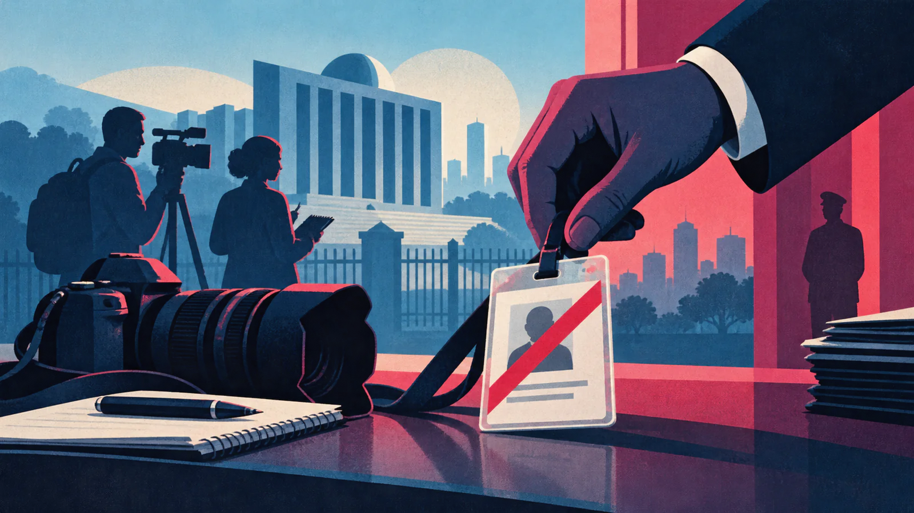

What to know
Ethiopia's government has revoked the media accreditation of Reuters journalists operating in the country, a move that press freedom organizations condemned as an attack on independent journalism and a blow to international media's ability to cover Africa's second most populous nation.
Further reading and standardsEthiopian authorities have revoked the accreditation of journalists working for Reuters, a move that has raised concerns among press freedom advocates and added to growing scrutiny of media conditions in the country.
Reuters said it was informed by Ethiopia’s government that the credentials of its journalists had been withdrawn, effectively preventing them from reporting from within the country. The news organization said it was seeking clarification from Ethiopian officials and engaging with authorities to resolve the issue.
The Ethiopian government has not publicly detailed the specific reasons for the decision, but officials indicated that the move followed concerns over compliance with accreditation rules. The lack of transparency surrounding the revocation has prompted questions from international media groups and rights organizations.
Concerns over press freedom
The decision comes amid heightened sensitivity around reporting on Ethiopia’s political and security challenges, including conflict-related issues, humanitarian conditions, and internal political developments. Media watchdogs say restrictions on journalists limit independent scrutiny and undermine public access to reliable information.

Press freedom advocates argue that international news organizations play a critical role in providing verified, balanced coverage, particularly in regions experiencing instability. Revoking accreditation, they say, risks creating an information vacuum and may discourage independent reporting.
Ethiopia has previously stated that it respects freedom of expression while also emphasizing the need for responsible journalism and adherence to national laws. Critics counter that accreditation measures are increasingly being used as tools to restrict coverage rather than ensure professional standards.
Reuters response
Reuters said it stands by the accuracy and fairness of its reporting and remains committed to covering Ethiopia responsibly. The organization noted that its journalists follow local laws and international journalistic standards, and that it has operated in Ethiopia for many years. “We are disappointed by the decision and are seeking urgent discussions with the authorities,” a Reuters spokesperson said, adding that the news agency hopes to continue reporting from the country. The revocation affects the ability of Reuters to gather news on the ground, potentially limiting real-time reporting on developments in one of Africa’s most populous nations.
Broader media environment
Ethiopia’s media landscape has faced increasing challenges in recent years. While reforms earlier raised hopes for greater openness, journalists and rights groups say pressures on both domestic and foreign media have intensified during periods of political tension.
Local journalists have reported arrests, legal action, and administrative hurdles, including delays or denials in licensing and accreditation. International organizations have repeatedly urged Ethiopian authorities to ensure a safe and enabling environment for journalists.
Government officials have defended media regulations as necessary to combat misinformation and maintain public order, particularly during times of conflict.
- Rates stay steady
- Fed data-dependent
- Policy unchanged
- Political pressure
"We don't expect to learn a lot at the January FOMC meeting. The Fed is on hold but remains data dependent. The balance of risks around the two mandates hasn't changed much since December," "Chair Powell's press conference might be dominated by questions about politics rather than policy. On the latter, however, market pricing creates risks of a dovish surprise." Trump has made no secret of his dislike for Powell, stating that there is "no inflation" and constantly criticizing the Fed chairman's competency and integrity.
International reaction
Global press freedom organizations and diplomatic observers are closely watching the situation. Some have called on Ethiopian authorities to reverse the decision and reaffirm commitments to media freedom. The revocation could also affect Ethiopia’s international image, particularly as it seeks investment, development partnerships, and diplomatic engagement. Analysts note that restrictions on independent media can raise concerns among foreign governments and institutions about transparency and governance.
It remains unclear whether the accreditation revocation is temporary or permanent. Reuters said it would continue engaging with Ethiopian officials to seek reinstatement and clarity on the requirements for its journalists to resume work. Observers say the outcome could signal how Ethiopia intends to manage relations with international media going forward. For now, the move highlights ongoing tensions between state authorities and independent journalism in a region where access to reliable information remains critical.
Further reading
Use these official collections to explore the subject and confirm time-sensitive figures against the dated record.